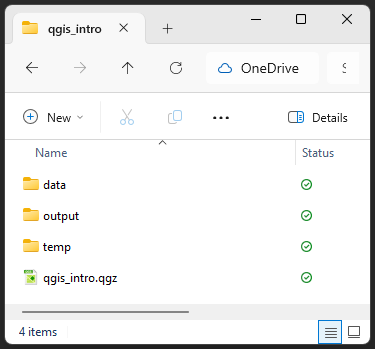

QGIS: Introduction to map making
Setting up
This tutorial is designed for QGIS 3.40. If you need to install it on your computer, go to the QGIS website.
Folder Structure
We will start by creating a good folder structure to work within. This folder is where our project, our data, and creations will live. Folder structure is very important for keeping your data tidy, as well as for ease of sharing your project with others. You simply need to zip the project folder if you need to share the whole thing.
Open QGIS and create a new project with
Project > New.Let’s now save our project:
Project > Save.Navigate to where you want to save your project, and create a new folder, let’s call it “qgis_intro”.
Inside that folder, create these folders:
“data” - for all the data we will use to make our maps, split into:
“raw” - raw data from your research or the internet
“processed” - any data you’ve modified
“output” - for any maps or images we export
“temp” - this folder isn’t necessary, but when you’re playing around and testing, it stops things getting messy.
Finally, let’s save our .qgz project file inside the “qgis_intro” folder, named “qgis_intro_map.qgz”

Your .qgz file should always be in the highest level folder, so it’s only looking down into folders for data, not back out. This might feel unnecessary now, but things quickly get out of control and hard to find if you don’t have a good folder structure.
Data Download
The data for this session can be directly downloaded from this link.
Once downloaded, extract the archive into your raw folder within your data folder.
Some of our data comes from Natural Earth: http://www.naturalearthdata.com/
Interface
The main elements of the interface are:
- the
Browserpanel, to navigate our file system and data sources - the
Layerspanel, to organise the different layers that compose our map - the
Canvas, where we see the map.
Load layers
Basemap
We can straight away load an OpenStreetMap basemap to have a background: in the Browser panel, XYZ Tiles > OpenStreetMap.
Controls
The default mouse mode is Pan Map, which allows to drag the map around. We can use the mouse wheel to zoom in and out, and press the Ctrl key to use more precision.
Vector data
To add our own data: Layer > Add Layer > Add Vector Layer..., choose the “ne_50m_admin_1_states_provinces” file, and click “Add”. It is now in your Layers panel.
You can also use the Project Home directory in the browser to add another layer: try loading the “populated places” and “rivers” shapefiles (format .shp), by drag-and-dropping or double-clicking.
All layers are visible in the “Layers” panel, with the most recently loaded by default at the top. Layers are rendered as they are listed, which means the top ones will cover the bottom ones. Make sure you optimise the order for your map!
You can also turn the layer visibility on and off from this panel with the tick box.
Learn about the data
You can open the attribute table to see tabular data contained in each layer. (Right-click on a layer and use “Open Attribute Table”. Alternatively, use the top toolbar button or use F6.)
You can also use the Identify Features tool in the top toolbar. This allows you to learn about specific features included in the currently selected layer.
Subset the data
We currently have data from all around the World, which you can confirm by using the Zoom Full button. However, we want to focus on Australia exclusively.
To remove the useless regions, we can do the following:
- Select the “admin” layer
- Use the
Select Featuresbutton, and draw a rectangle around Australia, so all the region appear in yellow - Right-click on the layer and use
Export > Save Selected Features As... - Name the new file “australia_admin” in your project directory, and click OK.
The new layer is loaded to the map by default.
Now that we have we have a layer with only the administrative regions for Australia, we can use that as an overlay layer to clip the rivers. Follow these steps:
- Select the layer you want to clip, in this case ne_10m_rivers_lake_centerlines
- Use the
Vector > Geoprocessing Tools > Clip...tool - Use the “australia_admin” layer as the overlay.
- Click “Run”
If you get an error about invalid geometries, you might have to use the
Fix geometriestool on the Australian shapefile first (found in the Processing Toolbox).
Notice how the clipped layers don’t have a descriptive name? Make sure you rename them. Let’s changed Clipped to australia_rivers_10m
You can now hide the original layers and confirm that you have only Australian data visible in the canvas by using the Zoom Full button.
Challenge: can you do the same for the Cities? Do you notice anything strange? How can we fix that?
Saving your project
It’s always a good idea to regularly save your progress.
And! Notice the little icon next to some of your layers? We previously created “temporary scratch layers”, they’re basically temp files that will disappear when we close QGIS. This is useful if you keep processing data and creating new layers that you want to discard afterwards. In our case, we do want to keep the “cities” and “rivers” layers, so we need to save them to a file. If we try to close QGIS with scratch layers loaded, it will give you a warning that they will be lost in the process.
You can click on the scratch layer icon to save the file. In the dialog, we can give the layers a File name (in our project’s home directory) and click OK.
You can save your project with the floppy disk icon, or using Ctrl + S, and the project should be visible in a list when you re-open QGIS again.
Change the symbology
Our vector layers are assigned a random colour when we load them. We now want to make them look better.
Double-click on the “admin” layer to open the Layer Properties click the 
Symbology tab, and use Color to change to a better colour. Click Apply. We can also go into more details about the border (colour, width, type of line…) by clicking on Simple fill.
We can make more complex fills by adding an extra “symbol layer”, and layering different kinds of fill styles. Try this with both polygons and lines. For example, style the rivers so they look like water (the topo hydrology preset is a good start).
Now try to change the point symbology of our “populated places” layer: we don’t have to stick to Simple marker. Try for example the different icons available with Symbol layer type > SVG marker or Font marker selected.
The Properties dialog is quite large and makes it difficult to see the changes in symbology. You can use the “Layer Styling Panel” (button in the Layers panel, or F7 shortcut) to use a side panel instead, with the “Live update” option on by default.
Classify vector data
Add labels
Have a look at the attribute table for our “populated places” layer. What could we use to label our points?
Double-click on the “populated places” layer: 
Labels and then click No Labels > Single labels. You can also use the Layer Labelling Options button to open the sidebar, which allows you to “Live update” the map when you change a setting.
Choose Value > Name to label with the city names. In the “Text” tab, we can change the look of our labels: amend the size, the colour, the font… We can also add a text buffer with the “Buffer tab” to make them more readable.
The placement tab allows us to fine-tune the placement of the labels in reference to the points. The default mode is “Cartographic”, and we can increase the distance to the symbol used. If we want the label to cover the point, we can use Mode > Offset from point and use the middle quadrant. We might also want to set the layer’s Symbology to “No Symbols”.
Label Lines
What if you want to label lines? It could be a good idea to change the default Placement from Parallel to Curved so the labels follow the shape of the lines. You can try it on the rivers. If the labels don’t show, increasing the Overrun Distance by a small amount might help.
If labels appear several times on the same line, you can try using
Rendering > Merge connected lines to avoid duplicate labels. You can also make it neater with the featureSuppress labelling of features smaller than, so QGIS doesn’t try to render labels for tiny features.
Tabular data
QGIS can deal with plain tabular data. For example, try importing the file HDI.ods: it doesn’t contain any coordinates, but we can still store it as a layer and use it in our project. You can see the data it contains by opening its attribute table.
How can we add the Human Development Index (HDI) data to our existing “admin” shapefile?
Joining tabular data
To add the HDI data to our region shapefile, we can go the the “admin” layer’s properties, use the 
Joins tab and click the Add new join button  to create a new join. We can then choose the HDI data as the
to create a new join. We can then choose the HDI data as the Join layer, and define what common field between the two tables we will merge on: the ISO_3166_2 code in our case.
You can now see the joined data highlighted in green in the 
Fields tab, click “OK”, and check the actual values in the “admin” layer’s attribute table.
Save styles
We can save styles with right-click > Styles > Add, which creates a new one and saves the previous version.
Classifying the symbology
What if we want to colour according to a variable? Depending on the type of variable, we can choose “Categorised” (for categorical data) or “Graduated” (for continuous data).
We can now use the joined data to change the symbology of our regions according to the HDI:
- Click on the
Layer Styling Panelbutton - Change from “Single Symbol” to “Graduated”
- Use the HDI column
- Pick a relevant colour ramp
- Click “classify”
Depending on the data that you deal with, different “Modes” will be more or less useful to create a good colour key. Try “Natural Breaks (Jenks)” for example.
Data Defined Symbology with the Assistant Tool
Still using a continuous numerical variable, we can change the size of the “populated places” symbols according to population. Use the Data defined override dropdown next to the Size box, and use the Assistant... to define the scale: set the “Source” to pop_max and click the “Fetch value range from layer” button. If the “Size from” value is too small, we can amend it.
Add a raster layer
The solaran file is average solar exposure data from the Australian Bureau of Meteorology. It is a text file that contains data organised in a grid: it is raster data.
Try loading the solaran.txt file: data about average solar exposure. What is the difference with the other files? What kind of layer is it imported as? What can you do to make it easier to read?
When importing data, QGIS might find everything it needs in the file(s) and add the layer as expect with only a drag-and-drop. Other times, we might have to be more specific by using the proper data type in the Layer > Data Source Manager and using the right settings.
In our case, we can import the solaran file with Data Source Manager > Raster, provide the path to the file in Source, and click Add. The file does not contain CRS information, which means we have to specify it in the following dialogue: WGS 84 (EPSG:4326).
Style a raster layer
This layer is a single-band raster layer, which gets coloured automatically in greyscale. We can change that in the symbology, set the Render type as “Singleband pseudocolor”, use the Color ramp called “Spectral”, and use the Color ramp drop-down menu to “Invert Color Ramp” in order to make the colouring more intuitive (i.e. red for high values and blue for low values).
To learn more about rasters, have a look at our Raster Analysis course
Plugins
A wealth of plugins is available: Plugins > Manage and Install Plugins.... Try for example to install QuickMapServices, to easily access many sources of raster data.
The plugin should automatically open a side panel in which you can search for terms. For example, search for “satellite” and add the ESRI satellite imagery to your project.
Create a layout to export
Click on Show Layout Manager in the toolbar. Create a new layout called “Default”. We can now see the Layout window.
We can now add elements to our layout: the map, a legend, a scale bar, a north arrow, text boxes for a title and data sources… In order to create a nice printout, or export in a variety of formats. You can select these from the left-hand-side toolbar, or by going to the Add Item menu up the top.
The layout manager allows us to save several different layouts, one for each output we want to generate. Even if we change our map data, we can reuse the same layouts and export an updated map.
If you need to zoom in on the Map you’ve added, you’ll need to change your edit tool the the Move item content tool by clicking it in the sidebar, going to
Edit > Move content, or by pressingCon your keyboard. If you’re having trouble zooming in exactly where you want to on the map, you can try the following: * Go back to your project window * Right click on the layer that covers the full extent of your area of interest and selectZoom to Layer(s)* Navigate back to the layout manager window, select your map from theItemstab, and click ont heItem Propertiestab. * Click the Set Map Extent to Match Main Canvas Extent button* Your map should zoom to match the extent your zoomed to in the project window.
Feedback
Please visit our website to provide feedback and find upcoming training courses we have on offer.